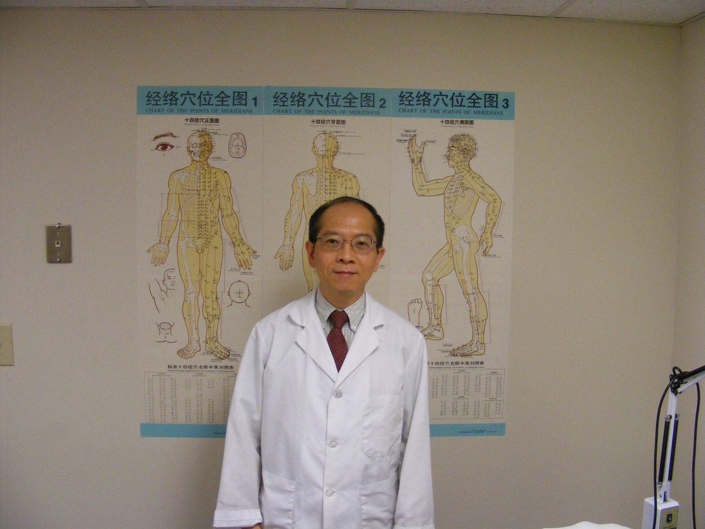
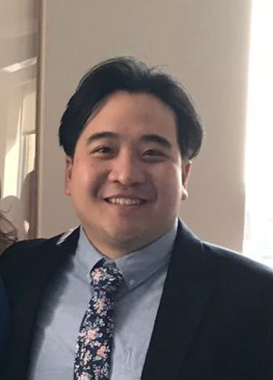
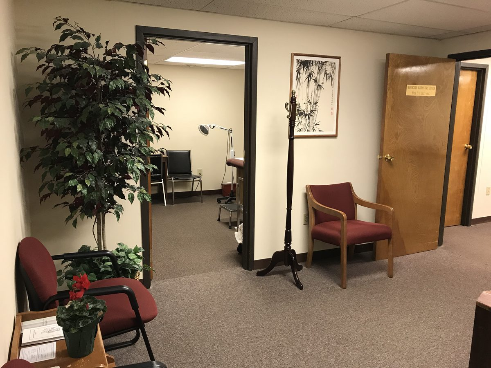
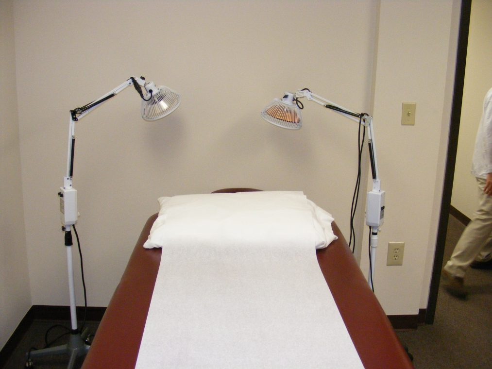
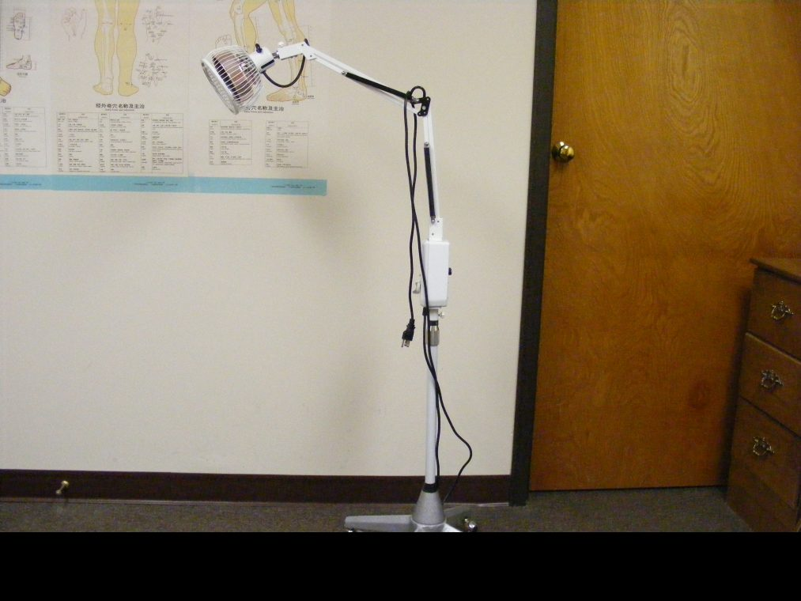

Weymouth Acupuncture Center is in a small red brick building just after the Weymouth Air Base entrance. It is an elevator-accessible second story office with a waiting room, consulting office, and two treatment rooms.

Doctor Fei Yi was a medical doctor in China. He is a licensed acupuncturist in Massachusetts and also National Board certified by the National Certification Commission for Acupuncture and Oriental Medicine. He graduated from Guangzhou Medical College in China in 1984 and worked as an internal physician in the same medical teaching hospital school.
Since Chinese medicine is used very much in conjunction with western medicine in taking care of health problems in China, he built up a solid foundation in his early practice years. In addition, he studied and practiced acupuncture and herbal medicine in The Traditional Chinese Medical Hospital of Guangdong Province with Doctor Luang Chu Jing, chairperson of the Acupuncture Department and a well known lecturer in China.
Since coming to the United States, Dr. Yi has worked as a research fellow at Harvard Medical School teaching hospital and Brigham and Women's Hospital for a number of years. At the same time, he also received his Master's Degree in Acupuncture from the New England School of Acupuncture. He started full time acupuncture practice in 1993. Because of Doctor Yi's background in both western and eastern medicine, it gives him a better opportunity to integrate the east to the west.

Dr. James Yi is a board-certified acupuncturist and Chinese medicine herbalist with a Doctor of Acupuncture degree from New England School of Acupuncture. He also holds a Bachelor's in Biological Sciences concentrating on Human Nutrition from Cornell University.
As part of his graduate training, he has worked in hospital settings such as Boston Medical Center and The Cleveland Clinic. James offers an integrative approach to patient care that draws from his education and experiences in both traditional Chinese medicine and biomedical sciences.
Located just south of the former Naval Air Station, on the second floor with full elevator access.


